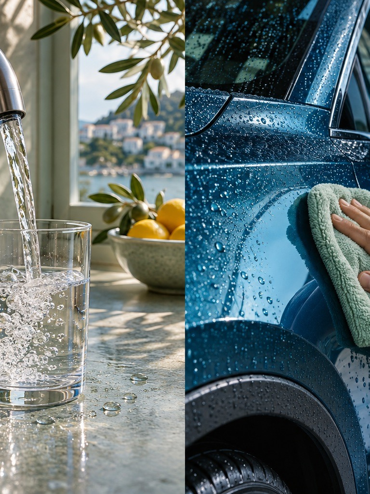

Su Arıtma
Kuşadası’nda su analizi sonucu nasıl okunur?
Analiz raporunu numune konumu, ölçüm tarihi ve sonuç birimiyle birlikte değerlendirin.
Yazıyı okuKettle veya bataryadaki kireç izlerinin neye işaret edebileceğini ve ölçüm için nereden başlamanız gerektiğini öğrenin.

Su ısıtıcısının içinde ve duş başlığında oluşan kalıntıların yeri ve hızı, hangi kullanım noktasında sorun yaşadığınızı gösterir. Kuşadası’ndaki bir konut için mahalle adından kesin su sertliği değeri çıkarmak yerine güncel veri veya adrese uygun ölçüm kullanın.
Su sertliği farklı birimlerle raporlanabilir. İki sonucu karşılaştırmadan önce ikisinin aynı birimde yazıldığını ve numunenin hangi noktadan alındığını kontrol edin. Ölçüm tarihi ve kaynağını da kayda ekleyin.
Kettle bakımı, duş ekipmanını koruma ve içme suyu cihazı seçimi farklı öncelikler doğurabilir. Cihaz almayı düşünüyorsanız performans belgesinde hedeflediğiniz özelliğin yer almasını ve bakım koşullarının evinize uygun olmasını isteyin.
İVSU Blog
Su Arıtma
Analiz raporunu numune konumu, ölçüm tarihi ve sonuç birimiyle birlikte değerlendirin.
Yazıyı oku
Su Arıtma
Kuşadası’nda su arıtma teklifini cihaz, kurulum ve düzenli bakım kalemleriyle karşılaştırın.
Yazıyı oku
Su Arıtma
Ortak su deposu olan binalarda depo kayıtlarını ve daire içindeki cihaz bakımını ayrı ayrı takip edin.
Yazıyı oku